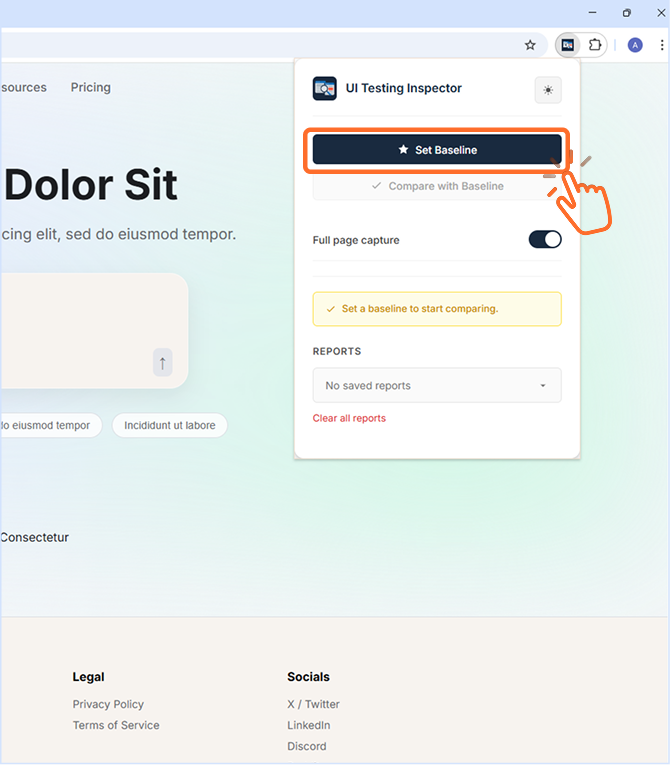

üéâ Now you have a great way to spot visual changes instantly
1. Pin the extension for quick access to the UI Testing Inspector.

2. Simply click on the extension icon to open the inspector.

How to use the extension
1️⃣ Navigate to the page you want to test and click "Set Baseline" in the extension popup. This is your source of truth.
2️⃣ Make changes to your CSS, update content, or refactor components.
3️⃣ After updates click "Compare with Baseline". A new tab will open with a detailed visual report.
4️⃣ Get Detailed Visual Diff Report with DOM analysis.
5️⃣ Simply click "Set Baseline" again to save the new look as your reference.